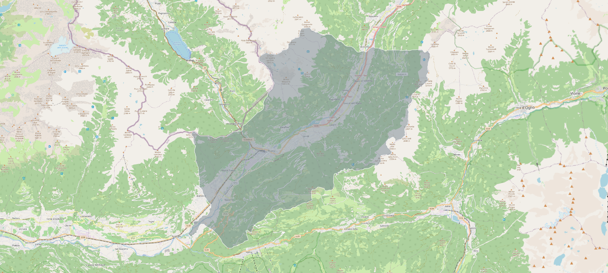

Our project target is to analyse the Landslide Susceptibility of an area of northeast part of Lombardy Region.

The importance of Landslide susceptibility analysis
Landslide susceptibility measurement is crucial for several reasons, primarily related to safety, economic stability, and environmental management. And it is a critical tool for safeguarding human lives, protecting property, conserving the environment, and fostering sustainable development. It provides a foundation for effective risk management strategies and supports resilience against natural hazards.
WorkflowOur team

Askar Zhempeissov
Born in Kazakhstan, Semey. Studying in Milan (MI)